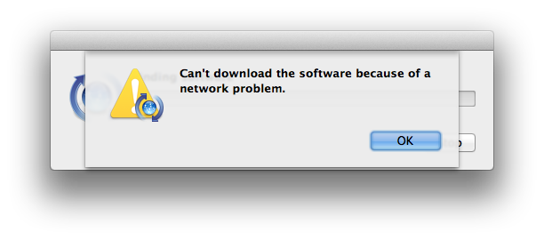

Installing Nokogiri
Welcome! We've spent quite a bit of time over the past year trying to make Nokogiri v1.11 easy and reliable to install. This page should hopefully get you on your way quickly.
Meta
The current version of this page focuses on the installation experience for Nokogiri v1.11.x. If you're trying to install an earlier version, please visit:
- [Nokogiri v1.10.x installation instructions])
If this document doesn't address your problem, please jump over to Getting Help.
If you'd like to contribute improvements to this document, please open a GitHub issue or pull-request on [nokogiri.org/installing_nokogiri.md]).
Installing Native Gems
Faster, more reliable installation
"Native gems" contain pre-compiled libraries for a specific machine architecture. On supported platforms, this removes the need for compiling the C extension and the packaged libraries, or for system dependencies to exist. This results in much faster installation and more reliable installation, which as you probably know are the biggest headaches for Nokogiri users.
Supported Platforms
As of v1.11.0, Nokogiri ships pre-compiled, "native" gems for the following platforms:
- Linux:
x86-linuxandx86_64-linux(req:glibc >= 2.17), including musl platforms like Alpine - Darwin/MacOS:
x86_64-darwinandarm64-darwin - Windows:
x86-mingw32andx64-mingw32 - Java: any platform running JRuby 9.2 or higher
To determine whether your system supports one of these gems, look at the output of bundle platform or ruby -e 'puts Gem::Platform.local.to_s'.
If you're on a supported platform, either gem install or bundle install should install a native gem without any additional action on your part. This installation should only take a few seconds, and your output should look something like:
$ gem install nokogiri
Fetching nokogiri-1.11.0-x86_64-linux.gem
Successfully installed nokogiri-1.11.0-x86_64-linux
1 gem installed
Why would I not want to use a native gem?
I can imagine some folks might have trust issues; if this is you, please let us know in a comment at RFC: Increase the level of trust in released gem files · Issue #2013 · sparklemotion/nokogiri. What can we do to increase that trust? (I can imagine providing a chain of custody including public build logs with cryptographic hashes of artifacts, but I'd like to hear from real users.)
Anybody on a linux system old enough to not have glibc >= 2.17 will need to install from the ruby platform gem.
If you have other reasons for not wanting to use a precompiled native gem, let us know! (See Getting Help.)
How can I avoid using a precompiled native gem?
The Nokogiri maintainers strongly urge you to use a native gem if at all possible. We expect it will be a much better experience for you and allow us to focus our efforts on improving functionality rather than diagnosing installation issues.
If you're on a platform that supports a native gem but you want to avoid using it in your project, do one of the following:
- If you're not using bundler, then run
gem install nokogiri --platform=ruby - If you are using bundler, then you'll need to run
bundle config set force_ruby_platform true
Installing the ruby platform gem
Again, we recommend that you upgrade to v1.11.x and use a native gem whenever possible. If you're here, it should be because you're on an older version, or you're on an unsupported platform.
Before you begin, make sure you have the full compiler toolchain for compiling Ruby C Extensions. See Appendix A: The Compiler Toolchain.
Installing Using The Packaged Libraries
Nokogiri packages its own updated and patched copies of libxml2 and libxslt source code. By default, installation of Nokogiri will compile and use these packaged libraries.
If you don't see your operating system / distro in this section, then no additional setup is required beyond Appendix A: The Compiler Toolchain. Just run gem install nokogiri --platform=ruby.
Ubuntu or Debian-based Distros
sudo apt-get install zlib1g-dev liblzma-dev patch
gem install nokogiri --platform=ruby
You may substitute git for patch (mini_portile2 can use either for applying patches).
Fedora, Red Hat, and CentOS
dnf install -y zlib-devel
gem install nokogiri --platform=ruby
OpenBSD < 6.2
Use gcc from ports in order to compile the packaged libraries:
pkg_add -v gcc
gem install nokogiri --platform=ruby
Installing Using Standard System Libraries
Rather than use Nokogiri's packaged versions, you may prefer to use your system's or distro's standard libxml2/libxslt libraries. This section will try to help you do that.
Nokogiri will refuse to build against older, unsupported versions of libxml2 and libxslt, and there may be some behavioral changes when using older versions. If you have installed libxml2 or libxslt to a custom location, please jump to the next section, Installing With Custom / Non-Standard Libraries.
If you don't see your operating system or distro listed below, then no additional setup is required beyond Appendix A: The Compiler Toolchain. Just run gem install nokogiri --platform=ruby -- --use-system-libraries. Or, if you're using bundler, bundle config build.nokogiri --use-system-libraries.
Debian/Ubuntu
sudo apt-get install pkg-config libxml2-dev libxslt-dev
gem install nokogiri --platform=ruby -- --use-system-libraries
MacOS
If you're using homebrew:
brew install libxml2 libxslt
gem install nokogiri --platform=ruby -- --use-system-libraries
If you're using macports and would like to contribute documentation, please open a GitHub issue or pull-request on [nokogiri.org/installing_nokogiri.md]).
FreeBSD
sudo pkg install pkgconf
gem install nokogiri --platform=ruby -- --use-system-libraries
Windows
We recommend installing Nokogiri against the MSYS2 system libraries:
ridk exec pacman -S mingw-w64-x86_64-libxslt
gem install nokogiri --platform=ruby -- --use-system-libraries
Installing With Custom / Non-Standard Libraries
You may have your own custom version of libxml2/libxslt that you'd like to use. OK! Here we go.
Ideally you can install pkg-config and the installed libraries should self-describe how to compile and build against themselves.
But if:
- you've got
libxml2and/orlibxsltinstalled in a nonstandard place, - and you don't have
pkg-configinstalled
... then you can use command-line parameters to the gem install command to specify build parameters.
You can specify the installation root directory:
gem install nokogiri -- \
--use-system-libraries \
--with-xml2-dir=/path/to/dir \
--with-xslt-dir=/path/to/dir
or, you can specify include and library directories separately:
gem install nokogiri -- \
--use-system-libraries \
--with-xml2-lib=/path/to/builds/lib \
--with-xml2-include=/path/to/builds/include/libxml2 \
--with-xslt-lib=/path/to/builds/lib \
--with-xslt-include=/path/to/builds/include
Note: By default, libxslt header files are installed into the root include directory, but libxml2 header files are installed into a subdirectory thereof named libxml2.
It's likely that you'll also need to specify the location of your zlib and iconv (and possibly exslt) install directories as well. In that case, you can add the options:
gem install nokogiri -- \
--use-system-libraries \
# ...
--with-iconv-dir=/path/to/dir \
--with-zlib-dir=/path/to/dir \
[--with-exslt-dir=/path/to/dir]
[--with-exslt-config=/path/to/exslt-config]
You can also tell bundler to remember these configuration parameters:
bundle config build.nokogiri \
--use-system-libraries \
--with-xml2-lib=/usr/local/lib \
--with-xml2-include=/usr/local/include/libxml2/libxml \
--with-xslt-lib=/usr/local/lib \
--with-xslt-include=/usr/local/include/libxslt \
--with-iconv-lib=/usr/local/lib \
--with-iconv-include=/usr/local/include
Do not attempt Bundler installation using Bundler versions before v1.8.3 (see bundler/bundler#3053 for details). If you really must, see earlier git history of [this file]), which includes a workaround.
Installing Third-Party Distributions of Nokogiri
Debian
See https://packages.debian.org/sid/ruby-nokogiri
sudo apt-get install ruby-nokogiri
openSUSE/SLE
See https://download.opensuse.org/repositories/devel:/languages:/ruby:/extensions/
Fedora, Red Hat, and CentOS
You may install the appropriate epel-release and get the Nokogiri package from EPEL using:
sudo dnf install -y rubygem-nokogiri
GNU Guix
Install on any Linux distribution using GNU Guix, a reproducible binary software package management and distribution system.
Use this command:
guix package -i ruby-nokogiri
Note: source code is available here. A short description of how Nokogiri was packaged can be found here.
Other Installation Scenarios
Alpine Docker Images
To just install the native gem:
FROM ruby:3.0-alpine
RUN gem install nokogiri
To compile with the packaged libraries:
FROM ruby:3.0-alpine
RUN apk add --no-cache build-base
RUN gem install nokogiri --platform=ruby
To compile against Alpine's own XML libraries, add the necessary development tools and libraries to the image.
FROM ruby:3.0-alpine
RUN apk add --no-cache build-base libxml2-dev libxslt-dev
RUN gem install nokogiri --platform=ruby -- --use-system-libraries
When optimizing the size of an Alpine image, the runtime libraries must be permanently added. Additionally, adding and removing development tooling can be chained with gem installation to ensure a small layer.
FROM ruby:3.0-alpine
RUN apk add --no-cache libxml2 libxslt && \
apk add --no-cache --virtual .gem-installdeps build-base libxml2-dev libxslt-dev && \
gem install nokogiri --platform=ruby -- --use-system-libraries && \
rm -rf $GEM_HOME/cache && \
apk del .gem-installdeps
This approach nets an 12.1 MB layer (versus 18.1 MB without --use-system-libraries)
and saves over 170 MB in build tools.
TermUX
Although TermUX isn't fully supported right now, some people have reported success getting Nokogiri installed on it by running these commands:
pkg install ruby clang make pkg-config libxslt
gem install nokogiri --platform=ruby -- --use-system-libraries
SmartOS (Nonstandard)
SmartOS installation requires building and using libxml2/libxslt/libiconv in a nonstandard location. Building on the previous section, here's how to do it:
(Note: pkgsrc is included in JPC SmartOS instances)
pkgin install ruby gcc49 libxml2 libxslt zlib libiconv ruby22-rake gmake
ln -s /opt/local/gcc49/bin/gcc /opt/local/bin/gcc
gem install nokogiri -- \
--use-system-libraries \
--with-xml2-lib=/opt/local/lib \
--with-xml2-include=/opt/local/include/libxml2 \
--with-xslt-lib=/opt/local/lib \
--with-xslt-include=/opt/local/include/libxslt \
--with-iconv-lib=/opt/local/lib \
--with-iconv-include=/opt/local/include \
--with-zlib-dir=/opt/local/lib
See the previous section for guidance on how to instruct Bundler to use these options.
Troubleshooting
Using vendor/cache to deploy to another architecture
A common workflow is for a team to develop on a Mac but deploy to production on Linux. This workflow depends on Bundler caching an appropriate gem file in vendor/cache. Unfortunately, in this situation Bundler's default behavior is to cache only gems for the development system and not the production system, leading to an error at deploy time.
Symptoms
During deployment, the buildpack may fail to find a relevant gem in vendor/cache and emit an error like this (from Heroku):
``` text hl_lines="8-11" -----> Ruby app detected -----> Installing bundler 2.1.4 -----> Removing BUNDLED WITH version in the Gemfile.lock -----> Compiling Ruby/Rails -----> Using Ruby version: ruby-2.7.2 -----> Installing dependencies using bundler 2.1.4 Running: BUNDLE_WITHOUT='development:test' BUNDLE_PATH=vendor/bundle BUNDLE_BIN=vendor/bundle/bin BUNDLE_DEPLOYMENT=1 bundle install -j4 Some gems seem to be missing from your vendor/cache directory. Could not find nokogiri-1.11.0 in any of the sources Bundler Output: Some gems seem to be missing from your vendor/cache directory. Could not find nokogiri-1.11.0 in any of the sources ! ! Failed to install gems via Bundler. ! ! Push rejected, failed to compile Ruby app. ! Push failed
#### Solution
Bundler 2.2 and later has *great* multiplatform support and allows you to cache gems for multiple platforms. You can run commands like these to cause Bundler to fetch and cache gems for all the named platforms:
``` sh
bundle lock --add-platform x86_64-darwin
bundle lock --add-platform x86_64-linux
bundle package --all-platformsFor more information, please read this wonderful blog post written by Kevin Murphy explaining this approach.
Fallback Solution
If you can't upgrade to Bundler 2.2 (or later), you can force older versions to always use the ruby platform, which supports all platforms, but applies to all gems and comes with the installation challenges mentioned earlier in this guide. Here's how:
rm -rf vendor/cache
bundle config set force_ruby_platform true
bundle install
Cannot install racc
As of v1.11.0, Nokogiri is declaring an explicit dependency on racc ~> 1.4, which itself is a C extension that users may have trouble installing.
Symptoms
You may see an error message like this:
``` text hl_lines="1-2 25-26" Fetching racc 1.5.2 Installing racc 1.5.2 with native extensions Gem::Ext::BuildError: ERROR: Failed to build gem native extension.
current directory: /Users/myuser2/.gem/ruby/2.7.0/gems/racc-1.5.2/ext/racc/cparse /opt/local/bin/ruby2.7 -I /opt/local/lib/ruby2.7/2.7.0 -r ./siteconf20210104-30183-axgzet.rb extconf.rb checking for rb_ary_subseq()... *** extconf.rb failed *** Could not create Makefile due to some reason, probably lack of necessary libraries and/or headers. Check the mkmf.log file for more details. You may need configuration options.
Provided configuration options:
--with-opt-dir
--with-opt-include
--without-opt-include=$opt-dir/include
--with-opt-lib
--without-opt-lib=$opt-dir/lib
--with-make-prog
--without-make-prog
--srcdir=.
--curdir
--ruby=/opt/local/bin/$(RUBY_BASE_NAME)2.7
/opt/local/lib/ruby2.7/2.7.0/mkmf.rb:471:in try_do': The compiler failed to generate an executable file. (RuntimeError)
You have to install development tools first.
from /opt/local/lib/ruby2.7/2.7.0/mkmf.rb:564:intry_link0'
from /opt/local/lib/ruby2.7/2.7.0/mkmf.rb:582:in try_link'
from /opt/local/lib/ruby2.7/2.7.0/mkmf.rb:794:intry_func'
from /opt/local/lib/ruby2.7/2.7.0/mkmf.rb:1083:in block in have_func'
from /opt/local/lib/ruby2.7/2.7.0/mkmf.rb:971:inblock in checking_for'
from /opt/local/lib/ruby2.7/2.7.0/mkmf.rb:361:in block (2 levels) in postpone'
from /opt/local/lib/ruby2.7/2.7.0/mkmf.rb:331:inopen'
from /opt/local/lib/ruby2.7/2.7.0/mkmf.rb:361:in block in postpone'
from /opt/local/lib/ruby2.7/2.7.0/mkmf.rb:331:inopen'
from /opt/local/lib/ruby2.7/2.7.0/mkmf.rb:357:in postpone'
from /opt/local/lib/ruby2.7/2.7.0/mkmf.rb:970:inchecking_for'
from /opt/local/lib/ruby2.7/2.7.0/mkmf.rb:1082:in have_func'
from extconf.rb:6:in
To see why this extension failed to compile, please check the mkmf.log which can be found here:
/Users/myuser2/.gem/ruby/2.7.0/extensions/arm64-darwin-20/2.7.0/racc-1.5.2/mkmf.log
extconf failed, exit code 1
#### Solution 1 - Compiler toolchain
Racc needs the same compiler toolchain to be present as any Gem with a C extension. See [Appendix A: The Compiler Toolchain](#appendix-a-the-compiler-toolchain).
#### Solution 2 - Avoid installing Racc
Ruby 3.0 comes with Racc 1.5.x as a "builtin gem", so you could update to Ruby 3!
Ruby 2.7 comes with Racc 1.4.x as a "builtin gem", so you could use that version instead of to upgrade. Update to Ruby 2.7 and add a line like `gem "racc", "~> 1.4.0"` to prevent bundler from to upgrade.
### [Linux] `/usr/bin/ld: cannot find -lgmp`
If you're compiling the `ruby` platform gem, and if you've installed Ruby using RVM, [you may require libgmp](https://github.com/rvm/rvm/issues/3509).
#### Symptoms
Gem installation fails with an error like:
``` sh
/home/user/.rvm/rubies/ruby-2.2.3/lib/ruby/2.2.0/mkmf.rb:456:in `try_do': The compiler failed to generate an executable file. (RuntimeError)
You have to install development tools first.And examination of your mkmf.log file shows:
/usr/bin/ld: cannot find -lgmp
Solution
Run sudo apt-get install libgmp-dev.
[MacOS] xcode-select errors with a 'network problem'
If you're compiling the ruby platform gem ...
Symptoms
You see this dialog when you run the commands to update xcode commandline tools:

Solution
Run this command to turn off forced-authentication with Apple Software Update:
sudo defaults delete /Library/Preferences/com.apple.SoftwareUpdate CatalogURL
[MacOS] error: use of undeclared identifier 'LZMA_OK'
If you're compiling the ruby platform gem ...
Symptoms
An error during Nokogiri installation mentions an undeclared identifier LZMA_OK:
xmlIO.c:1450:52: error: use of undeclared identifier 'LZMA_OK'
ret = (__libxml2_xzclose((xzFile) context) == LZMA_OK ) ? 0 : -1;
^
1 error generated.
Diagnosis
When using Homebrew, there are several libraries that use a formula called xz (including the_silver_searcher and imagemagick), which by default install a version of liblzma that is incompatible with most Ruby builds. (Homebrew installs only the 64-bit version of the library, but most Ruby builds are universal.) This can be fixed in a couple of ways:
Solution 1
The most reliable solution appears to be temporarily unlinking xz and relinking it during an install of nokogiri:
brew unlink xz
gem install nokogiri # or bundle install
brew link xz
Solution 2
The other solution is to use a Homebrew-installed libxml2, as suggested in Installing Using Standard System Libraries.
brew install libxml2
gem install nokogiri -- --use-system-libraries \
--with-xml2-include=$(brew --prefix libxml2)/include/libxml2
or if you're using bundler:
bundle config build.nokogiri --use-system-libraries \
--with-xml2-include=$(brew --prefix libxml2)/include/libxml2
bundle install
When working with this, be certain to use $(brew --prefix libxml2) because it will use the correct location for your Homebrew install.
[MacOS] libiconv is missing
Xcode 10 on macOS Mojave moves the system headers out of /usr/include and so Nokogiri will fail to build when you're compiling the ruby platform gem.
Symptoms
You'll see an error similar to this:
``` text hl_lines="3" Building nokogiri using packaged libraries.
libiconv is missing. please visit http://nokogiri.org/tutorials/installing_nokogiri.html for help with installing dependencies.
*** extconf.rb failed *** Could not create Makefile due to some reason, probably lack of necessary libraries and/or headers.
#### Solution
A temporary workaround to allow previous releases of Nokogiri to build is to install the extra headers package mentioned in the Xcode 10 release notes:
``` sh
open /Library/Developer/CommandLineTools/Packages/macOS_SDK_headers_for_macOS_10.14.pkgYou can also install the headers package from the command line (e.g. for a build script or a CI server):
sudo installer -pkg /Library/Developer/CommandLineTools/Packages/macOS_SDK_headers_for_macOS_10.14.pkg -target /
[MacOS] General MacOS Tips
If you're seeing other problems:
- Make sure ruby is compiled with the latest clang compiler.
- Binary gems and ruby should be compiled with the same compiler/environment.
- If you have multiple versions of Xcode installed, make sure you use the right
xcode-select. - Try Installing Using Standard System Libraries.
Appendix A: The Compiler Toolchain
A good way to tell if you've got your basic Ruby C extension compiler toolchain installed correctly is to try installing the bcrypt gem which has a smaller, self-contained C extension. If you can gem install bcrypt, you're all set!
Reminder: if you're installing a native gem, you don't need to do this.
Ubuntu or Debian-based Distros
sudo apt-get install build-essential ruby-dev
Fedora, Red Hat, and CentOS
dnf install -y make gcc rpm-build ruby-devel
Windows
Please visit RubyInstaller and make sure you install a version "With Devkit".
MacOS
First, make sure you have the latest version of RubyGems and xcode commandline tools:
gem update --system
xcode-select --install # Then agree to the terms, even if you have done this before!
Agree to the Xcode license:
sudo xcodebuild -license